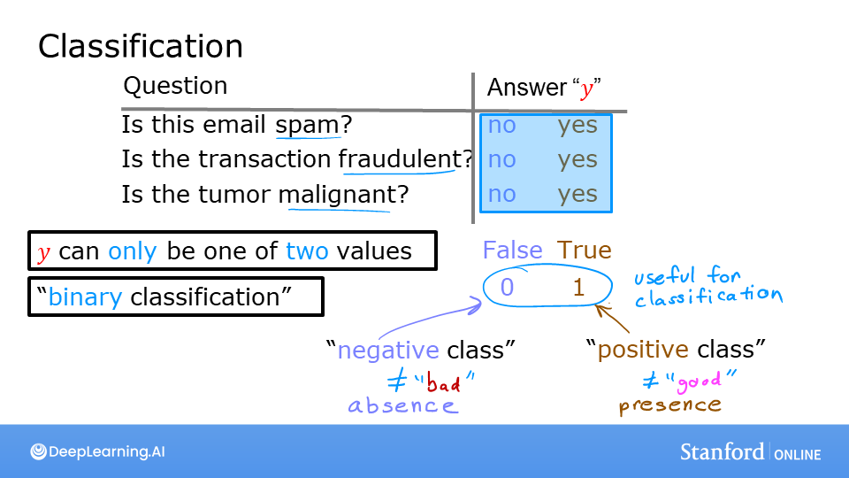
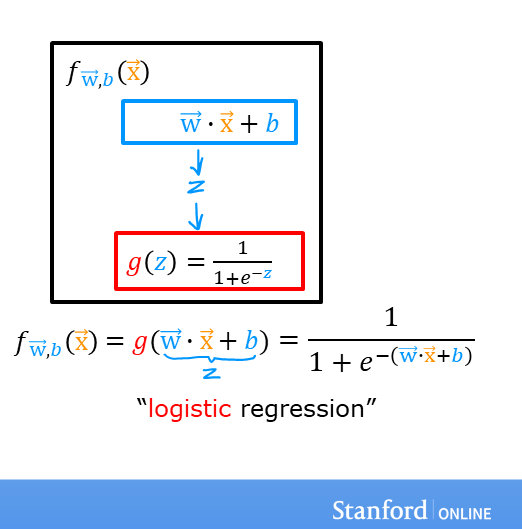
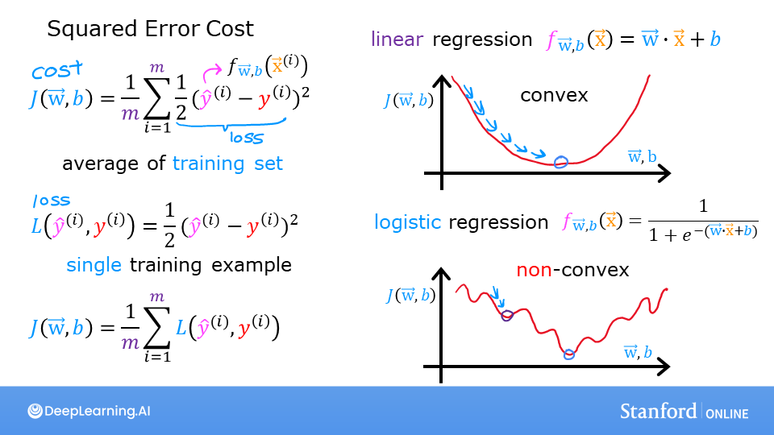
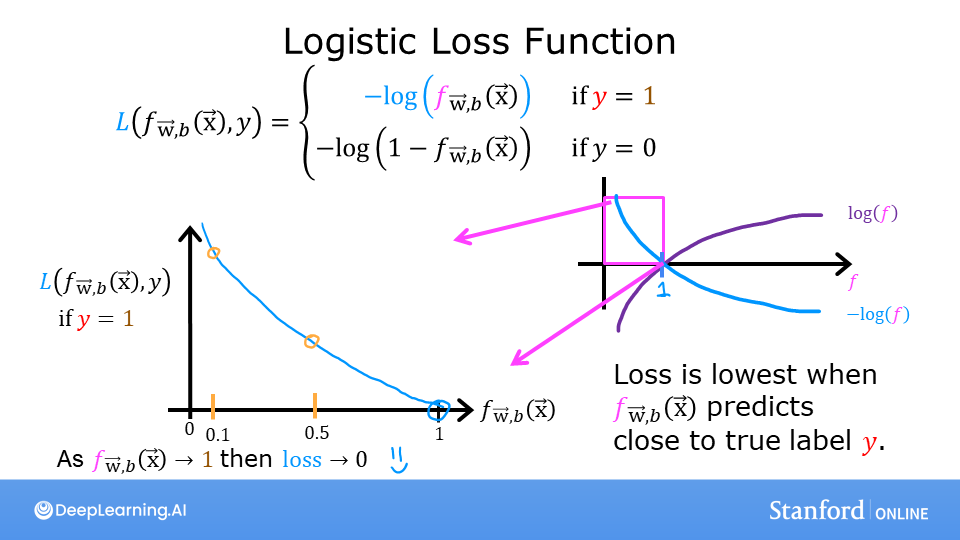

Logistic Regression
Khi câu trả lời là “có” hoặc “không”: ép đầu ra của mô hình tuyến tính vào khoảng (0, 1) và đọc nó như một xác suất.
Bài toán phân loại
Email có phải spam? Giao dịch có gian lận? Khối u ác tính hay lành tính? Đầu ra \(y\) chỉ nhận hai giá trị: 0 (lớp âm, negative) hoặc 1 (lớp dương, positive).
Lab01 thử dùng hồi quy tuyến tính cho bài toán này: kẻ đường thẳng rồi lấy ngưỡng 0.5. Nó chạy được… cho tới khi thêm một điểm dữ liệu rất xa bên phải — đường thẳng nghiêng đi và ngưỡng 0.5 dịch chuyển, làm phân loại sai các điểm vốn đúng. Hồi quy tuyến tính không phù hợp cho phân loại.

Hàm sigmoid
- \(z \to +\infty\): \(g(z) \to 1\); \(z \to -\infty\): \(g(z) \to 0\); \(g(0) = 0.5\).
- Đơn điệu tăng, trơn, khả vi khắp nơi, và có đạo hàm đẹp: \(g'(z) = g(z)(1 - g(z))\).
def sigmoid(z):
g = 1 / (1 + np.exp(-z)) # chạy được với số, vector, ma trận
return gMô hình logistic regression

Đầu ra được hiểu là xác suất: \(f_{\mathbf{w},b}(\mathbf{x}) = P(y = 1 \mid \mathbf{x}; \mathbf{w}, b)\). Ví dụ \(f = 0.7\) nghĩa là mô hình tin 70% khối u này ác tính.
Ranh giới quyết định
Để ra quyết định 0/1, ta dùng ngưỡng 0.5: dự đoán \(\hat y = 1\) khi \(f \ge 0.5\), tức khi \(g(z) \ge 0.5\), tức khi \(z \ge 0\). Vậy ranh giới quyết định là tập các điểm thoả
Ví dụ trong Lab03: \(w_0 = 1, w_1 = 1, b = -3\) cho ranh giới \(x_0 + x_1 = 3\) — một đường thẳng. Với đặc trưng đa thức như \(x_0^2 + x_1^2\), ranh giới có thể là đường tròn hoặc hình dạng phức tạp hơn.
Hàm mất mát logistic
Nếu dùng lại sai số bình phương, hàm chi phí \(J\) của logistic regression sẽ không lồi — đầy hố cục bộ, gradient descent dễ kẹt (Lab04 vẽ minh hoạ điều này).

Thay vào đó ta dùng log loss (binary cross-entropy):
Trực giác: nếu \(y = 1\) mà mô hình dự đoán \(f \approx 0\) (tự tin và sai), mất mát \(-\log(f) \to \infty\). Nếu dự đoán \(f \approx 1\) (đúng), mất mát \(\approx 0\). Mô hình bị phạt rất nặng khi tự tin mà sai.

Hàm chi phí
Hàm này lồi, và có nguồn gốc từ ước lượng hợp lý cực đại (MLE) với giả định \(y\) tuân theo phân phối Bernoulli. Code mình viết trong Practice Lab:
def compute_cost(X, y, w, b, *argv):
m, n = X.shape
total_cost = 0
for i in range(m):
z_wb = np.dot(w, X[i]) + b
f_wb = sigmoid(z_wb)
cost = -y[i] * np.log(f_wb) - (1 - y[i]) * np.log(1 - f_wb)
total_cost += cost
total_cost = total_cost / m
return total_costGradient descent cho logistic regression
Một điều bất ngờ: đạo hàm có đúng cùng dạng với hồi quy tuyến tính!
Khác biệt nằm ở định nghĩa của \(f\): ở đây \(f = g(\mathbf{w}\cdot\mathbf{x}+b)\) chứ không phải \(\mathbf{w}\cdot\mathbf{x}+b\).
Vì sao lại gọn như vậy? (bấm để xem)
Với một ví dụ, \(\frac{\partial L}{\partial f} = -\frac{y}{f} + \frac{1-y}{1-f} = \frac{f - y}{f(1-f)}\). Và \(\frac{\partial f}{\partial z} = f(1-f)\). Nhân lại theo quy tắc chuỗi: \(\frac{\partial L}{\partial z} = f - y\). Mẫu số \(f(1-f)\) triệt tiêu hoàn toàn — đây là “phép màu” khi ghép sigmoid với log loss.
def compute_gradient(X, y, w, b, *argv):
m, n = X.shape
dj_dw = np.zeros(w.shape)
dj_db = 0.
for i in range(m):
f_wb = sigmoid(np.dot(X[i], w) + b)
dj_db += f_wb - y[i]
for j in range(n):
dj_dw[j] += (f_wb - y[i]) * X[i, j]
return dj_db / m, dj_dw / m
def predict(X, w, b):
# vector hoá: ngưỡng 0.5
return (sigmoid(X @ w + b) >= 0.5).astype(float)Bài toán: dự đoán sinh viên có đậu đại học dựa trên điểm hai kỳ thi. Sau 10.000 vòng gradient descent, độ chính xác trên tập train đạt khoảng 92%. Phần hai dùng dữ liệu kiểm tra chất lượng vi mạch (microchip) với đặc trưng đa thức bậc 6 và regularization (chương 7).
Scikit-learn
from sklearn.linear_model import LogisticRegression
lr_model = LogisticRegression()
lr_model.fit(X, y)
y_pred = lr_model.predict(X)
print("Accuracy:", lr_model.score(X, y))
proba = lr_model.predict_proba(X)[:, 1] # xác suất lớp 1- Ngưỡng không nhất thiết là 0.5. Trong sàng lọc ung thư, bỏ sót (false negative) nguy hiểm hơn báo nhầm, nên có thể hạ ngưỡng xuống 0.3. Đánh đổi precision/recall được bàn kỹ ở chương 11.
- Tràn số: \(\log(0)\) cho
-inf. Thư viện thực tế tính trực tiếp từ \(z\): \(L = \log(1 + e^{z}) - yz\) và dùng thủ thuật log-sum-exp. Đây chính là ý nghĩa củafrom_logits=Truetrong TensorFlow (chương 9). - Phân loại đa lớp với logistic: chiến lược one-vs-all — huấn luyện \(K\) bộ phân loại nhị phân, mỗi cái tách một lớp khỏi phần còn lại, rồi chọn lớp có xác suất cao nhất. Softmax (chương 9) là cách tự nhiên hơn.
- Lab01 — Classification · Lab02 — Sigmoid · Lab03 — Decision Boundary
- Lab04 — Logistic Loss · Lab05 — Cost Function · Lab06 — Gradient Descent
- Lab07 — Scikit-Learn
- C1_W3 Practice Lab — Logistic Regression (graded:
sigmoid,compute_cost,compute_gradient,predict, bản regularized)
Đi từng bước qua lab
- Lab01 — vì sao không dùng hồi quy tuyến tính. Thêm một khối u rất lớn vào dữ liệu: đường thẳng nghiêng đi và ngưỡng 0.5 phân loại sai các điểm cũ.
- Lab02 — sigmoid.
g = 1/(1+np.exp(-z)); in bảng \(z\) từ −10 đến 10 để thấy \(g\) đi từ ≈0 đến ≈1 và bằng 0.5 tại \(z = 0\). - Lab03 — ranh giới quyết định. Với \(w = [1, 1], b = -3\), mô hình dự đoán 1 khi \(x_0 + x_1 \ge 3\); lab tô vùng đó trên đồ thị (code trong ghi chú Notion).
- Lab04 — so hai hàm mất mát. Sai số bình phương + sigmoid cho mặt chi phí gồ ghề; log loss cho mặt lồi trơn.
- Lab05 — tính chi phí. Trên 6 điểm của lab, \(w = [1, 1], b = -3\) cho \(J = 0.367\); đổi sang \(b = -4\) thì \(J = 0.504\): ranh giới tệ hơn nên chi phí cao hơn.
- Lab06 — gradient descent. \(\alpha = 0.1\), 10.000 vòng, từ \(w = [0, 0], b = 0\) tới \(w = [5.28, 5.08], b = -14.22\).
- Lab07 — scikit-learn.
LogisticRegression().fit(X, y), độ chính xác trên tập train là 1.0. - Practice Lab. Nạp điểm hai kỳ thi → viết
sigmoid→compute_cost(bằng 0.693 khi \(w = b = 0\), đúng bằng \(\ln 2\)) →compute_gradient→ huấn luyện 10.000 vòng →predict→ độ chính xác train 92%.
Một nhà mạng muốn biết thuê bao nào sắp chuyển mạng. Đặc trưng: số tháng sử dụng, số lần gọi tổng đài tháng này, cước trung bình, có dùng gói data không. Nhãn: đã rời đi trong 30 ngày (1) hay không (0).
- Đầu ra \(f\) là xác suất rời bỏ, nên có thể xếp hạng khách từ nguy cơ cao xuống thấp.
- Ngưỡng phụ thuộc chi phí: nếu gọi điện giữ chân rẻ mà mất khách đắt, hạ ngưỡng xuống 0.3 để bắt được nhiều người hơn.
- Trọng số dễ đọc: \(w_{\text{gọi tổng đài}} \gt 0\) nghĩa là càng phàn nàn nhiều càng dễ rời đi.
proba = model.predict_proba(X_customers)[:, 1]
call_list = customers[proba >= 0.3].sort_values("monthly_fee", ascending=False)Từ ghi chú Notion
Đoạn code mình ghi lại từ lab Decision Boundary, tô vùng dự đoán \(y = 0\) bên dưới đường thẳng:
x0 = np.arange(0, 6)
x1 = 3 - x0 # w0 = w1 = 1, b = -3 => x1 = 3 - x0
fig, ax = plt.subplots(1, 1, figsize=(5, 4))
ax.plot(x0, x1, c="b")
ax.axis([0, 4, 0, 3.5])
ax.fill_between(x0, x1, alpha=0.2) # vùng z < 0
plot_data(X, y, ax)
ax.set_ylabel(r'$x_1$'); ax.set_xlabel(r'$x_0$')
plt.show()Và ví dụ scikit-learn trên 6 điểm:
X = np.array([[0.5, 1.5], [1, 1], [1.5, 0.5], [3, 0.5], [2, 2], [1, 2.5]])
y = np.array([0, 0, 0, 1, 1, 1])
lr_model = LogisticRegression().fit(X, y)
print("Prediction on training set:", lr_model.predict(X))
print("Accuracy on training set:", lr_model.score(X, y))Nguồn Notion: Regression and Classification
Ghi nhớ
- \(f = g(\mathbf{w}\cdot\mathbf{x}+b)\), \(g\) là sigmoid; \(f\) là xác suất \(y = 1\).
- Ranh giới quyết định: \(\mathbf{w}\cdot\mathbf{x}+b = 0\).
- Dùng log loss (không dùng bình phương) để \(J\) lồi.
- Gradient có dạng giống hệt hồi quy tuyến tính: trung bình (f − y)·x.
Tự kiểm tra
z = 0 thì mô hình dự đoán gì?
\(g(0) = 0.5\) — điểm nằm đúng trên ranh giới quyết định. Với ngưỡng “≥ 0.5”, dự đoán là 1.
y = 0, mô hình dự đoán f = 0.99. Loss bằng bao nhiêu?
\(-\log(1 - 0.99) = -\log(0.01) \approx 4.6\). Rất lớn so với khi đúng (\(-\log 0.99 \approx 0.01\)).